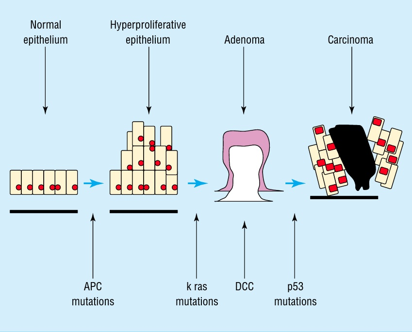

COLON CANCER
DEFINITION
Cancer of the large bowel, up to start of rectum.
top D I A B M
I M home
INCIDENCE
2nd biggest killing cancer after lung.
Accounts for 2/3 of colorectal malignancy
Age
Peak age 60-79, not uncommon younger (20% <50 yrs)
Geography
Common in N America, Europe, Australasia, NZ
Risk Factors
~5% are hereditary; 95% sporadic
- hence family history is very important.
Genetics:
20% patients have FHx of CRC
- 1st degree relative = RR 2-3
- 2x 1st degree relatives = RR 3-4
- 2nd or 3rd degree relative = RR 1.5
- 2x 2nd or 3rd degree relatives = RR 2-3
1st degree relative with adenomatous polyp = RR2
Younger age of relatives (<50 years) increases risk further
- (3rd degree is great-grandparents & cousins).
Environmental
Tobacco >35yrs is a risk factor
High calorie, high refined carbs, high red meat, less fibre and less
micronutrients.
Associated conditions
(Formerly
HNPCC)
Familial
Adenomatous Polyposis
Peutz-Jegher
Complication of inflammatory bowel disease
top D I A B M
I M home
AETIOLOGY
Aetiology
90% appear to arise from adenomas
Somatic mutations
Mutation of APC gene (early)
- APC is the gatekeeper
gene: mutation allows cell proliferation and decreases
inter-cellular contact (via beta-catenin)
- this key in FAP (cf HNPCC: caretaker DNA repair genes defective)
Mutation of K-ras in 50% (oncogene)
Mutation or loss of p53 in 80% (tumour suppressor)
Other possible: DCC (cell adhesion molecule)(ch. 18);
Peutz-Jegher gene (ch. 19)

top D I A B M
I M home
BIOLOGICAL BEHAVIOUR
Pathology
40% rectum, 30% sigmoid, 30% elsewhere. 1% multiple location
May be protuberant, ulcerating or structuring.
- Stricturing, annular more often in LHS (obstructive picture)
- Exophytic, polypoid more often on RHS (occult picture)
Adenocarcinomas:
- secrete abundant mucin --> worse prognosis as aids extension.
- some show foci of squamous differentiation: adenosquamous
carcinomas.
Generate fibrosing stromal response (desmoplasia) - solid and
scirrous.
Natural History
60% 'advanced' by time of diagnosis
- 40% locoregional spread
- 20% distant mets
Metastatic route
Nodal spread
Liver via portal circulation
Lungs via haematogenous spread
Complications
Occasionally ulcerate, fistulate, perforates
top D I A B M
I M home
MANIFESTATIONS
Site of cancer often dictates symptomatology
- R sided lesions = anaemia, vague abdo pain, weight loss, change in
bowel habit.
- L sided lesions = change in bowel habit, rectal bleeding,
obstructions.
Symptoms
Local
Rectal bleeding (distal)
Change in bowel habit (bouts of diarrhoea, chronic constipation
etc).
Change of stool caliber.
Colicky lower abdo pain +/- distension (distal with obstruction).
20% emergency admissions for obstruction,
occasionally perforations.
General
Fatigue, lethargy, headache, weakness, anaemia & symptoms.
Weight loss
Metastatic
Distant organ disease
Signs
Abdominal mass, faecal impaction.
2/3 rectal tumours can be felt at PR.
Examine for features of metastatic
disease (10% at diagnosis).
Hepatomegaly, wasting, pallor of conjunctiva
Assess liver.
Also check major organ systems in case of metastases
top D I A B M
I M home
INVESTIGATIONS
Bloods
FBC
- assess and manage anaemia
Work up comorbid conditions.
CEA
Pre-operative baseline
Sensitivity imperfect
- raised in only 25-50% of resectable disease
- and 75% of metastatic disease
Level correlated with prognosis
- however, does not guide use of adjuvant therapy.
Colonoscopy and Biopsy
Mainstay of accurate diagnosis.
(note also, Ba enema may miss if diverticular disease present or in
caecum)
Staging
CT chest / abdo / pelvis
- if referred with abdo pelvis only, then it is reasonable to do a
pre-op chest XR and complete the staging post op
PET offers little for primary lesions, but role in assessment of
recurrent or metastatic disease.
Contrast allergy?
Non-con CT of chest and MRI abdo pelvis ok, consider PET-CT if
findings questionable
TNM 7th Edn
Tis = in-situ
T1 = invades submucosa
T2 = invades muscularis propria
T3 = through muscularis propria into subserosa
- or onto non-peritonealized peri-colic or peri-rectal tissues
T4a = Tumour penetrates serosa / visceral peritoneum
T4b = Tumour invades and is adherent to other organs
N0 = no nodes
N1a = 1 regional nodes
N1b = 2-3 nodes
N1c = tumour deposits in subserosa, mesentery without regional nodes
N2a = 4-6 nodes
N2b = 7+ nodes
M0 = no mets
M1a = distant mets, one site
M1b = distant mets 2+ sites
Stages
0 Tis N0 M0
I = T1-2, N0, M0
IIA = T3, N0, M0
IIB = T4a, N0, M0
IIC = T4b, N0, M0
IIIA = T1-2, N1-N1c, M0; T1,N2a,M0
IIIB = T3-4a, N1-N1c, M0; T2-3, N2a, M0; T1-2, N2b, M0;
IIIC = T4a, N2a, M0; T3-4a, N2b, M0; T4b, N1-2, M0
IVA = Any T, any N, M1a
IVB = Any T, any N, M1b
5-yr Survival
I = 70-95% (~80%)
II = 54-65% (~60%)
III = 39-60% (~50%)
IV = 0-16% (~<10%)
Dukes (Historic)
A -> within wall, -ve nodes (15% cases, >90% 5YS)
B -> beyond wall, -ve nodes (35% cases, 60% 5YS)
- B1 = extending to, but not penetrating muscularis propria, no
nodes (67%)
- B2 = penetrating muscularis propria, no nodes (54%)
C -> +ve nodes (50% cases, 30% 5YS)
- C1 = extending to, but not penetrating muscularis propria, nodes
(43%)
- C2 = penetrating muscularis propria, nodes (23%)
(D) -> Liver metastasis - median survival 7 mths
Met to lymph locally to nodes, portal system to liver
Later to brain, bones, lungs
top D I A B M
I M home
MANAGEMENT
Prevention
Population based - diet change (less meat, fat, charred, more veg
gives fewer polyps).
Vit C&E, folate, Ca2+ may show benefits.
Aspirin and NSAIDs have some effect.
Screening (see notes)
Principles
Correct resection is based on:
- accurate localization of primary and synchronous lesions
- exclusion of family cancer syndromes
- extent of disease
- operative risk assessment.
Goal of surgery is R0 resection:
Complete resection of primary
Primary feeding vessel
Adjacent organs en-bloc if involved.
Regional lymph harvest
Resection margins of 2-5cm
Resection type depends on:
Anatomic distribution of feeding vessels
Feeding vessel
Lymphatic drainage
1. Work up the Bowel
Thorough evaluation for synchronous Ca (~5%), and significant
polyps.
If can't do colonoscopy, consider barium enema, or CT colonography.
2. Intra-operative
Evaluation for Metastatic Disease
Liver, peritoneal surfaces (ovaries, diaphragm)
Omentum
Para-aortic nodes
3. Oncologically-Sound
Resection
- ligation of appropriate arterial and venous supply to provide
adequate lymph clearance
- resection of sufficient bowel and other tissues to achieve clear
prox, distal and radial margins.
--> need a 5cm margin on either side of the tumour.
- en-bloc resection of all associated nodes, and involved adjacent
structures
- when adhesions to tumour, do not divide but take back to
connecting structure en-bloc as may be malignant.
- no role for debulking
--> resect to the top of the named feeding vessel and with
preservation of the mesentery.
--> mark apical vessels if involved (negative prognostic
indicator)
- appropriately vascularized segments for a tension-free
anastomosis.
No touch technique?
Ie, where vessels are ligated prior to tumour handling
Not supported by evidence, so no need.
But be careful with the tumour so it doesn't break and spill
4. Colonic Considerations
Transverse fed by middle colic.
- transverse colectomy = difficult to safely anastomose
--> extended right or left is probably a safer option.
Sigmoid, descending and splenic are fed by IMA, left and middle
colic respectively
- segmental or extended resection involving middle colic may be
reqd.
Consider subtotal if synchronous lesions in different segments.
5. Laparoscopic Colectomy?
Oncologically equivalent.
Clear benefits in post-op stay and reduced ileus.
Past concerns with safety, port site mets, technical feasibility and
operative time are now overcome.
- operative time equivalent when competent.
- port-site mets are no more common than incisional mets with
technical skill
- safety fine in right hands.
Emphasis should be on: safe handling, medial to lateral dissection,
appropriate early conversion.
6. Lymph Nodes
T and N stage strongly predict 5 year survival.
- T1 = 9-10% risk of nodes
- T2 = 25% risk
- T3 = 45% risk
12 nodes should be retrieved for accurate assessment of N0 status.
Pathological techniques like fat clearing may be needed
Evidence for wider lymphadenectomy?
'Standard ligation' is at origin of primary feeding vessel and
should include all draining lymph nodes
'High ligation' is defined as extended lymphadenectomy beyond the
primary lymph node distribution
- e.g. ligation and resection of IMA at aorta rather than superior
rectal vessels alone for rectal cancer.
--> in the absence of clinical evidence of nodes in the extended
region, high ligation not shown to improve survival.
Extending lymphadenectomy up trunks of major arteries (eg SMA for
caecal cancer) certainly does not improve survival
But, clinically positive nodes out of the field of resection should
be biopsied or removed at time of primary resection.
- if no other positive nodes remain then may consider resection
'complete'.
Special Considerations
Lap vs open?
Equivalent oncological outcomes (Grade 1A evidence)
And sufficiently safe intraoperatively in experienced hands
Equivalent short and long-term outcomes
Suture or stapled?
Basically equivalent in experienced hands.
However, cochrane review has suggested overall lower leak
rate in stapled for ileocolic anastomoses (Choy et al 2008)
Omental wrap the anastomosis?
No benefit
Prophylactic oopherectomy
No. Unless family cancer syndrome relevant to ovary and
post-menopausal.
And remove if involved (Krukenburg tumour).
- occurs in <15% of metastatic disease but can reach a large size
- and if one is involved, then remove both.
En-bloc resection
Important to note that survival from R0 resection depends on node
disease, not adjacent invasion.
Synchronous tumours
Must perform genetic screening
Can either: treat with 2 separate resections or subtotal colectomy
- hereditary or other risk factors and patient leak risk may help
inform balance toward subtotal.
Sentinel lymph node biopsy
As yet remains in research and has no clinical role; must do
formal lymphadenectomy.
Results of trials remain discordant and are not sufficiently
accurate
Emergency Presentations
Bleeding
Rare presentation
Resuscitate and usual pathways including interventional radiology
If they need surgery, do a proper oncological procedure.
Very occasionally this may be a total colectomy.
Obstructing cancer.
Mortality considerably higher.
Impending perf may preclude proper evaluation / clearance of colon.
- careful intra-op loading
Right obstructing lesions are simpler; R hemi and primary
anastomosis.
Options for L obstructions with fecal loading and distention are
more complex
- loaded colon limits safe anastomosis; options:
--> subtotal colectomy (for low rectal tumours with compromised
caecum)
--> on-table lavage and segmental colectomy with or without
diverting stoma.
--> Hartmann resection (typically reserved for more extreme
situations or patients suitable for permanent colostomy).
Lavage and join was compared with subtotal colectomy --> no diffs
in outcome in an RCT.
- indeed, lavage may not be mandatory before primary anastomosis in
this setting.
Colonic stenting?
Effective bridging step to relieve obstruction; particularly when
left-sided.
Safe and efficacious in converting to a 1-stage segmental resection.
Allows colonic decompression, metabolic and nutritional recovery and
adequate workup.
Downsides:
- limited data on migration and perforation.
- rct has been halted due to unacceptably high rate of perforation
in the stented group.
--> others say evidence of lower rates of complications, more
primary anastomoses, improved outcomes
- significant cost of stents (but balanced by lower overall
healthcare costs)
Problems are migration, failure, perforation, bleeding, pain.
Can't be placed within 5cm from anal verge and causes pain when
placed in rectum.
Perforation and peritonitis
Abdominal washout, resection if at all possible
- resection based on hemodynamic stability (vs damage control)
- if peritonitis established then fecal diversion usually wise.
- primary anastomosis in patients with minimal contamination,
healthy tissues and clinical stability.
If the tumour itself has perforated, and is contained then en-bloc
resection of local contaminated structures can be considered to
reduce recurrence.
Locally contained perf with abscess may be drained percutaneously
Concurrent Liver / Other Mets
Primary Cancer and Resectable
Liver Tumour (Synchronous Stage IV disease)
Individualised care in a multidisciplinary MDT setting.
Options:
i. Resection, chemotherapy then delayed resection.
ii. Resect liver, delayed primary resection.
iii. Simultaneous.
Last option high risk but safe in experienced hands.
First is a good and more common option, allows assessment for early
development of multilobar disease / assess chemotherapy
responsiveness as robust patient selection
Must perform a true oncological resection in anybody with
potentially resectable disease; no shortcuts.
- and remember some non-resectable disease can become resectable,
e.g. after chemo response or with portal vein embolization.
Primary Cancer and Unresectable Synchronous Stage IV disease
Current survival in this context is 24m and improving out to 34m
with modern sequential chemotherapies
Palliative intervention / resection should be restricted to
symptomatic primary disease only (grade 1B evidence)
- previous studies supported operating on all of them, newer studies
and in context of modern chemo do not support that approach.
Adjuvant Therapy
Aims to eradicate micrometastatic disease
Benefit proportional to risk of mets / stage.
Stage III disease
Yes. Grade 1A evidence for chemo here.
- 30-70% recurrence rate
- chemo increases survival 10-15%
Ie. reduces risk of recurrence by 30% and death by 25%
- further major benefit for modern chemo agents, up to 20% further
efficacy.
All node-positive patients should receive chemo for 6 monhts.
Generally regimens are 5-fluorouracil
based.
- most typical modern regimens includes leucovorin and oxaliplatin.
- strong evidence for these regimens based on >7 phase III
trials.
- e.g. Multicenter International Study of Oxaliplatin/5-FU/LV =
clear benefit for oxaliplatin + infusional 5-FU/LV (FOLFOX) over
FOLFOX alone.
To date, monoclonal antibody therapies have failed to show
additional benefit.
- irinotecan has no role.
Bottom line:
- Oxaliplatin-containing regimen
(FOLFOX plus oxaliplatin ie XELOX) for 6 months after
resection
- Capectiabine and 5-FU/LV reserved for patients thought not optimal
candidates for oxaliplatin
- FOLFOX only standard of care for younger pts (<70y) and
biologically-young-older-patients
Optimal responders detection at molecular level progressing:
- microsatellite instabilities
- wild-type K-Ras
- sensitivity to antiepidermal growth factors
Radiation therapy has no defined role.
Stage II disease
More controversial; Grade 2B evidence here and should be
individualised.
Trend toward recurrence free and overall survival in a series of
trials; up to 8% absolute mortality reduction.
QUASAR trial (Quick and Simple And Reliable)
- 3% benefit in 3-year DFS and OS with bolus 5-FU/LV.
Oxaliplatin added does not improve this situation in unselected
patients
But better response seen in
high-risk stage II disease
- T4, poor grade, peritumor lymphovascular invasion, obstruction,
<10 nodes identified, T3 and perf, close margins
--> shift toward adjuvant therapy here as well.
Recommendation
Decision made in discussion with patients about individual
risk/benefit ratio.
Adjuvant Online can help to illustrate risk profile.
--> Treat high-risk Stage II
patients if they want it
--> T4 have a poorer prognosis and should be treated
Note
Patients with defective mismatch repair (MMR) or microsatellite
unstable (MSI) phenotypes:
- have excellent prognosis
- but 5FU resistant
--> should be tested and very
likely will not benefit from adjuvant therapy
Follow Up
Early identification
Regular imaging and biochemical evaluation.
But only 10% of recurrences are resectable with curative intent.
Reasonable Approach (NCCN Guidelines)
3 monthly office history and physical exams (and CEA if T2+),
then 6 months to total 5 yrs
Annual CT abdo, chest for 3 years in patients with a high recurrence
risk
Colonoscopy annually (unless no prior colo)
- if no advanced adenoma found, repeat at 3y instead after first
one, then out to 5-yearly.
- if advanced adenoma found, repeat yearly.
Duration
60-80% recurrences within first 2 years, 90% within 5 years.
So reduce to 6monthly review after 2 years.
After normal colonoscopy at 1 year, reduce to 3 yearly.
- risk of metachronous polyps is 30-50%, risk of metachronous cancer
2-8%
3-yr disease-free survival closely correlates with overall 5-yr
survival.
After 5 years, close surveillance is of little benefit.
Distant Mets
Depending on stage, 30-50% of patients followed will develop lung
and liver mets
CEA
Is a glycoprotein associated with cell adhesion in the GI tract,
produced by tumours.
Recurrence
1. Loco-regional
Multidisciplinaryteam input
Salvage surgery is possible in up to 30% of patients.
- aggressive multimodal therapy can achieve success rates of 27-37%
Better survival if: R0 resection, early disease stage, no associated
distant disease, unifocal recurrence, and lack of retroperitoneal
involvment.
2. Peritoneal Carcinomatosis
Multidisciplinary care
Cytoreduction surgery has a role.
- often in conjunction with intraperitoneal chemo.
High morbidity and pts should ideally be enrolled in trials.
3. Palliative Interventions
Should be based on symptoms
Eg. resection, stent, ablation, bypass, or diversion.
top D I A B M
I M home
References
Cameron 10th
Practice Parameters for Colon Cancer
NHMRC Guidelines